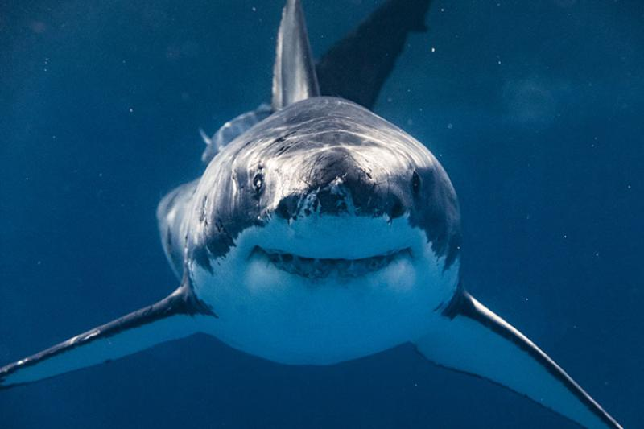

Sea Creatures
Octopus

Octopuses inhabit various ocean habitats, including coral reefs, pelagic waters, and the seabed; some live in the intertidal zone and others at abyssal depths. Most species grow quickly, mature early, and are short-lived.
Seahorse

Anatomical evidence, supported by molecular, physical, and genetic evidence, demonstrates that seahorses are highly modified pipefish. The fossil record of seahorses, however, is very sparse.
Shark
Sharks are a group of elasmobranch cartilaginous fish characterized by a ribless endoskeleton, dermal denticles, five to seven gill slits on each side, and pectoral fins that are not fused to the head.
Dolphin

Dolphins are widespread. Most species prefer the warm waters of the tropic zones, but some, such as the right whale dolphin, prefer colder climates. Dolphins feed largely on fish and squid, but a few, such as the orca, feed on large mammals such as seals.
Whale

Whales are a widely distributed and diverse group of fully aquatic placental marine mammals. As an informal and colloquial grouping, they correspond to large members of the infraorder Cetacea, i.e. all cetaceans apart from dolphins and porpoises.